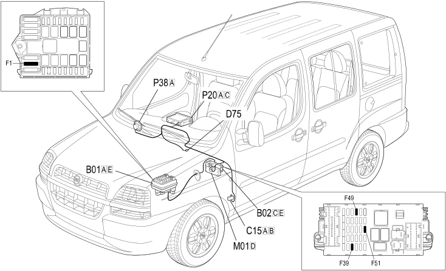

E3580 PREPARATION FOR CELLULAR TELEPHONE - LOCATION OF COMPONENTS
- Path
- Electrical equipment > 1 ELECTRICAL FUNCTIONS > E35 RADIO ACCESSORIES > E3580 PREPARATION FOR CELLULAR TELEPHONE > E3580 PREPARATION FOR CELLULAR TELEPHONE - LOCATION OF COMPONENTS
- Kind
- topic
- Applies to
- engines: 1.2 8v, 1.6 16v, 1.3 JTD 16V, 1.9 JTD 8V, 1.9 DIESEL; all production periods
- Interactive page
- https://sloeber94.github.io/elrnDB-fDbl/en/#/223002435
Applies to: engines: 1.2 8v, 1.6 16v, 1.3 JTD 16V, 1.9 JTD 8V, 1.9 DIESEL; all production periods
Location of components

COMPONENTS
Component code | Name | Assembly reference |
|---|---|---|
Engine compartment junction unit | ||
Engine compartment junction unit | ||
Junction unit under dashboard | ||
Facia earth, driver's side | - | |
Radio phone junction | - | |
Body computer | ||
Car radio | ||
Right front speaker in dashboard |